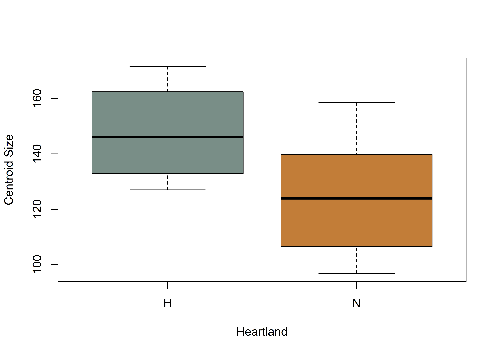

This volume is in Open Review. I want your feedback to make the volume better for you and other readers. To add your annotation, select some text and then click the on the pop-up menu. To see the annotations of others, click the in the upper right hand corner of the page
Chapter 2 Analysis
2.1 Generalised Procrustes Analysis
# library(devtools)
# devtools::install_github("geomorphR/geomorph", ref = "Stable", build_vignettes = TRUE)
library(geomorph)## Loading required package: RRPP## Loading required package: rgllibrary(wesanderson)
setwd(getwd())
# read GM data
source('readmulti.csv.R')
# read .csv files
setwd("./data")
filelist <- list.files(pattern = ".csv")
coords <- readmulti.csv(filelist)
setwd("../")
# read qualitative data
qdata <- read.csv("qdata.csv",header=TRUE,row.names=1)
qdata <- qdata[match(dimnames(coords)[[3]],rownames(qdata)),]
qdata## heart.out heart.reg
## 11AI225 H H
## 11HE445 N P
## HK49_1462 N I
## HK49_2 N I
## HK49_4 N I
## HK49_7 N I
## KeilMangold13 H H
## KeilMangold3 H H
## KeilMangold8 H H
## Kinzer46 N P
## Kinzer49 N P
## Kinzer50 N P# gpa
Y.gpa <- gpagen(coords, PrinAxes = TRUE, ProcD = TRUE, Proj = TRUE, print.progress = FALSE)
# gpa plot
# knitr::include_graphics('images/gpa3d.png')
# fig.cap="Results of generalized Procrustes analysis."
# geomorph data frame
gdf <- geomorph.data.frame(shape = Y.gpa$coords, size = Y.gpa$Csize, heart = qdata$heart.out, hreg = qdata$heart.reg)
# attributes for boxplots
csz <- Y.gpa$Csize # centroid size
heart <- qdata$heart.out # heartland in/out
hreg <- qdata$heart.reg # heartland region
# boxplot of Dalton point centroid size by in/out heartland
boxplot(csz~heart,
names = c("H","N"), # heartland (H), and not heartland (N)
xlab = "Heartland",
ylab = "Centroid Size",
col = wes_palette("Moonrise2"),
)
fig.cap = "Boxplot of centroid size by Heartland (in/out)."
# boxplot of Dalton point centroid size by heartland + regions
boxplot(csz~hreg,
names = c("H","I","P"), # heartland (H), interior (I), and northern periphery (P)
xlab = "Heartland Region",
ylab = "Centroid Size",
col = wes_palette("Moonrise2"),
)
2.2 Principal Components Analysis
##
## Ordination type: Principal Component Analysis
## Centering and projection: OLS
## Number of observations 12
## Number of vectors 12
##
## Importance of Components:
## Comp1 Comp2 Comp3 Comp4
## Eigenvalues 0.009312475 0.00144648 0.0007429635 0.0006407519
## Proportion of Variance 0.696908125 0.10824876 0.0556004007 0.0479512917
## Cumulative Proportion 0.696908125 0.80515689 0.8607572868 0.9087085785
## Comp5 Comp6 Comp7 Comp8
## Eigenvalues 0.0003773806 0.0002591519 0.0002263497 0.0001600805
## Proportion of Variance 0.0282416477 0.0193938872 0.0169391025 0.0119797820
## Cumulative Proportion 0.9369502262 0.9563441134 0.9732832159 0.9852629978
## Comp9 Comp10 Comp11 Comp12
## Eigenvalues 7.788778e-05 6.264734e-05 5.638891e-05 2.049974e-33
## Proportion of Variance 5.828808e-03 4.688275e-03 4.219919e-03 1.534118e-31
## Cumulative Proportion 9.910918e-01 9.957801e-01 1.000000e+00 1.000000e+00# set plot parameters to plot by heartland in (H) and out (N)
pch.gps.heart <- c(15,17)[as.factor(heart)]
col.gps.heart <- wes_palette("Moonrise2")[as.factor(heart)]
col.hull <- c("#798E87","#C27D38")
# plot pca by heartland in (H) and out (N)
pc.plot1 <- plot(pca, asp = 1,
pch = pch.gps.heart,
col = col.gps.heart)
shapeHulls(pc.plot1,
groups = heart,
group.cols = col.hull)
# set plot parameters to plot by heartland + regions
pch.gps.hreg <- c(15,17,18)[as.factor(hreg)]
col.gps.hreg <- wes_palette("Moonrise2")[as.factor(hreg)]
col.hull.2 <- c("#798E87","#CCC591","#C27D38")
# plot pca by heartland + regions
pc.plot2 <- plot(pca, asp = 1,
pch = pch.gps.hreg,
col = col.gps.hreg)
shapeHulls(pc.plot2,
groups = hreg,
group.cols = col.hull.2)
2.3 Define models
fit.sizeheart <- procD.lm(size ~ heart, data = gdf, print.progress = FALSE, iter = 9999)
fit.sizehreg <- procD.lm(size ~ hreg, data = gdf, print.progress = FALSE, iter = 9999)
fit.shapeheart <- procD.lm(shape ~ heart, data = gdf, print.progress = FALSE, iter = 9999)
fit.shapehreg <- procD.lm(shape ~ hreg, data = gdf, print.progress = FALSE, iter = 9999)2.4 Size/Shape ~ In/Out of Heartland?
##
## Analysis of Variance, using Residual Randomization
## Permutation procedure: Randomization of null model residuals
## Number of permutations: 10000
## Estimation method: Ordinary Least Squares
## Sums of Squares and Cross-products: Type I
## Effect sizes (Z) based on F distributions
##
## Df SS MS Rsq F Z Pr(>F)
## heart 1 0.04698 0.046980 0.31962 4.6977 2.1383 0.0213 *
## Residuals 10 0.10001 0.010001 0.68038
## Total 11 0.14699
## ---
## Signif. codes: 0 '***' 0.001 '**' 0.01 '*' 0.05 '.' 0.1 ' ' 1
##
## Call: procD.lm(f1 = shape ~ heart, iter = 9999, data = gdf, print.progress = FALSE)##
## Analysis of Variance, using Residual Randomization
## Permutation procedure: Randomization of null model residuals
## Number of permutations: 10000
## Estimation method: Ordinary Least Squares
## Sums of Squares and Cross-products: Type I
## Effect sizes (Z) based on F distributions
##
## Df SS MS Rsq F Z Pr(>F)
## heart 1 1439.8 1439.75 0.24911 3.3175 1.0579 0.09605 .
## Residuals 10 4339.9 433.99 0.75089
## Total 11 5779.7
## ---
## Signif. codes: 0 '***' 0.001 '**' 0.01 '*' 0.05 '.' 0.1 ' ' 1
##
## Call: procD.lm(f1 = size ~ heart, iter = 9999, data = gdf, print.progress = FALSE)2.5 Size/Shape ~ Heartland + Regions?
##
## Analysis of Variance, using Residual Randomization
## Permutation procedure: Randomization of null model residuals
## Number of permutations: 10000
## Estimation method: Ordinary Least Squares
## Sums of Squares and Cross-products: Type I
## Effect sizes (Z) based on F distributions
##
## Df SS MS Rsq F Z Pr(>F)
## hreg 2 0.052684 0.026342 0.35842 2.514 1.5203 0.07175 .
## Residuals 9 0.094304 0.010478 0.64158
## Total 11 0.146988
## ---
## Signif. codes: 0 '***' 0.001 '**' 0.01 '*' 0.05 '.' 0.1 ' ' 1
##
## Call: procD.lm(f1 = shape ~ hreg, iter = 9999, data = gdf, print.progress = FALSE)# pairwise comparison of LS means = which differ?
sh.hreg <- pairwise(fit.shapehreg, groups = qdata$heart.reg)
summary(sh.hreg, confidence = 0.95, test.type = "dist")##
## Pairwise comparisons
##
## Groups: H I P
##
## RRPP: 10000 permutations
##
## LS means:
## Vectors hidden (use show.vectors = TRUE to view)
##
## Pairwise distances between means, plus statistics
## d UCL (95%) Z Pr > d
## H:I 0.12340118 0.1390142 1.5238546 0.0951
## H:P 0.14640107 0.1363220 2.3425328 0.0303
## I:P 0.05340121 0.1368627 -0.7453086 0.7464# pairwise distance between variances = standardization?
summary(sh.hreg, confidence = 0.95, test.type = "var")##
## Pairwise comparisons
##
## Groups: H I P
##
## RRPP: 10000 permutations
##
##
## Observed variances by group
##
## H I P
## 0.013484388 0.003353103 0.006738604
##
## Pairwise distances between variances, plus statistics
## d UCL (95%) Z Pr > d
## H:I 0.010131285 0.01094240 1.6093311 0.0739
## H:P 0.006745784 0.01093859 0.5395385 0.2904
## I:P 0.003385501 0.01090853 -0.5006636 0.6352##
## Analysis of Variance, using Residual Randomization
## Permutation procedure: Randomization of null model residuals
## Number of permutations: 10000
## Estimation method: Ordinary Least Squares
## Sums of Squares and Cross-products: Type I
## Effect sizes (Z) based on F distributions
##
## Df SS MS Rsq F Z Pr(>F)
## hreg 2 1475.3 737.63 0.25525 1.5423 0.65995 0.2554
## Residuals 9 4304.4 478.27 0.74475
## Total 11 5779.7
##
## Call: procD.lm(f1 = size ~ hreg, iter = 9999, data = gdf, print.progress = FALSE)# pairwise comparison of LS means = which differ?
sz.hreg <- pairwise(fit.sizehreg, groups = qdata$heart.reg)
summary(sz.hreg, confidence = 0.95, test.type = "dist")##
## Pairwise comparisons
##
## Groups: H I P
##
## RRPP: 10000 permutations
##
## LS means:
## Vectors hidden (use show.vectors = TRUE to view)
##
## Pairwise distances between means, plus statistics
## d UCL (95%) Z Pr > d
## H:I 21.129079 31.37133 0.8383642 0.2068
## H:P 25.342765 31.14089 1.2981949 0.1210
## I:P 4.213687 30.91455 -0.9357657 0.7977# pairwise distance between variances = standardization?
summary(sz.hreg, confidence = 0.95, test.type = "var")##
## Pairwise comparisons
##
## Groups: H I P
##
## RRPP: 10000 permutations
##
##
## Observed variances by group
##
## H I P
## 278.3626 338.1850 459.5544
##
## Pairwise distances between variances, plus statistics
## d UCL (95%) Z Pr > d
## H:I 59.82237 539.7653 -1.0838680 0.8549
## H:P 181.19176 537.6419 -0.3412214 0.5737
## I:P 121.36939 536.7711 -0.7061467 0.70362.6 Morphological disparity
# morphological disparity: does Dalton point morphology display greater shape variation among individuals?
# in/out of heartland
morphol.disparity(fit.shapeheart, groups = qdata$heart.out, data = gdf, print.progress = FALSE, iter = 9999)##
## Call:
## morphol.disparity(f1 = fit.shapeheart, groups = qdata$heart.out,
## iter = 9999, data = gdf, print.progress = FALSE)
##
##
##
## Randomized Residual Permutation Procedure Used
## 10000 Permutations
##
## Procrustes variances for defined groups
## H N
## 0.013484388 0.005758776
##
##
## Pairwise absolute differences between variances
## H N
## H 0.000000000 0.007725612
## N 0.007725612 0.000000000
##
##
## P-Values
## H N
## H 1.0000 0.1013
## N 0.1013 1.0000# heartland + regions
morphol.disparity(fit.shapehreg, groups = qdata$heart.reg, data = gdf, print.progress = FALSE, iter = 9999)##
## Call:
## morphol.disparity(f1 = fit.shapehreg, groups = qdata$heart.reg,
## iter = 9999, data = gdf, print.progress = FALSE)
##
##
##
## Randomized Residual Permutation Procedure Used
## 10000 Permutations
##
## Procrustes variances for defined groups
## H I P
## 0.013484388 0.003353103 0.006738604
##
##
## Pairwise absolute differences between variances
## H I P
## H 0.000000000 0.010131285 0.006745784
## I 0.010131285 0.000000000 0.003385501
## P 0.006745784 0.003385501 0.000000000
##
##
## P-Values
## H I P
## H 1.0000 0.0739 0.2904
## I 0.0739 1.0000 0.6352
## P 0.2904 0.6352 1.0000# morphological disparity: does Dalton point size display greater shape variation among individuals?
# in/out of heartland
morphol.disparity(fit.sizeheart, groups = qdata$heart.out, data = gdf, print.progress = FALSE, iter = 9999)##
## Call:
## morphol.disparity(f1 = fit.sizeheart, groups = qdata$heart.out,
## iter = 9999, data = gdf, print.progress = FALSE)
##
##
##
## Randomized Residual Permutation Procedure Used
## 10000 Permutations
##
## Procrustes variances for defined groups
## H N
## 278.3626 403.3085
##
##
## Pairwise absolute differences between variances
## H N
## H 0.0000 124.9459
## N 124.9459 0.0000
##
##
## P-Values
## H N
## H 1.0000 0.6021
## N 0.6021 1.0000# heartland + regions
morphol.disparity(fit.sizehreg, groups = qdata$heart.reg, data = gdf, print.progress = FALSE, iter = 9999)##
## Call:
## morphol.disparity(f1 = fit.sizehreg, groups = qdata$heart.reg,
## iter = 9999, data = gdf, print.progress = FALSE)
##
##
##
## Randomized Residual Permutation Procedure Used
## 10000 Permutations
##
## Procrustes variances for defined groups
## H I P
## 278.3626 338.1850 459.5544
##
##
## Pairwise absolute differences between variances
## H I P
## H 0.00000 59.82237 181.1918
## I 59.82237 0.00000 121.3694
## P 181.19176 121.36939 0.0000
##
##
## P-Values
## H I P
## H 1.0000 0.8549 0.5737
## I 0.8549 1.0000 0.7036
## P 0.5737 0.7036 1.00002.7 Mean shapes
# subset landmark coordinates to produce mean shapes by site
# new.coords <- coords.subset(A = Y.gpa$coords, group = qdata$heart)
# names(new.coords)
# group shape means
# mean <- lapply(new.coords, mshape)
# plot(mean$vv)
# mean shapes
#knitr::include_graphics('images/dalton-mshape.png')
#fig.cap = "Mean shapes for Dalton points by region"
# end of code